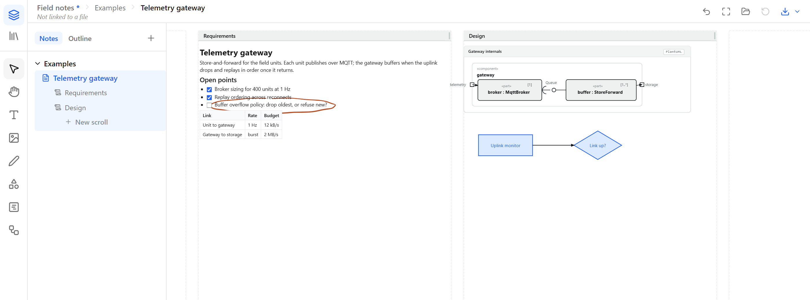

Pages and named scrolls on an infinite canvas. Markdown, ink, images and diagrams that stay editable. Press Ctrl+S and the whole thing, editor included, is written to a file on your disk. A local AI agent can work in the notebook you are looking at.
Drag the bar at the right of a scroll title to resize it, the way you would in the notebook. Double-click the bar to reset.
Canvas
Structure outside, freedom inside.
Sections and pages give the notebook a spine. Inside a page, named scrolls stand side by side on an infinite canvas, each an independent vertical workstream.
Examples › Telemetry gatewaycaptured from the app

Sections and pages
The hierarchy you know from OneNote. The sidebar shows the outline of every scroll on the page, and search and replace work across the notebook.
Named scrolls
Each scroll is a resizable column with its own title. Widen one and the others keep their place. Give a scroll to a topic, a week, or an agent.
Blocks of every kind
Markdown with tables, checklists and math. Pressure ink with an eraser that cuts strokes. Images with crop and rotate. Shapes with labels, and arrows that stay attached when you move things.
The file
The editor travels with the notebook.
Ctrl+S does not export. It writes the current editor, your workspace, every image and ink stroke, and any installed extension into one self-contained HTML file. Open that file in a browser and you are back where you left off, with no install and no server.
That is also why sharing is simple. Send the file and the recipient receives an editable notebook, whatever machine they open it on.
Direct save and autosave in Chrome and Edge, download fallback elsewhere
In-app updates that keep your content and extensions
Notebooks written by PowerNote open unchanged
Inside PowerScroll.htmlschematic
Agents
Your agent works where you can see it.
The bridge is a local MCP server. It runs on your machine only and stays off until you switch it on in the notebook. When it is on, an agent reads and writes the same pages you do, through the same stores, undo history and save path. There is no second copy to reconcile.
npx -y powerscroll-mcp
Published on npm as powerscroll-mcp and listed in the official MCP Registry. Works with Claude Code, Codex, Cursor and any other MCP client.
The same save path you use. One agent holds the write lease at a time; reads never block.
Privacy
Nothing leaves your machine unless you ask.
There is no PowerScroll server. Editing is your browser and your disk. The few things that do reach the network are listed here, and each one waits for you to press a button.
Action
Talks to
When
Editing and saving
Nothing. Your browser and your disk.
Always
Hosted notebook
GitHub Pages serves the app once. Notebook content is not uploaded.
On load
Update check
GitHub Releases
When you press Check for updates
Extension install
GitHub Releases
When you press Install
Agent bridge
A loopback connection on 127.0.0.1, nothing beyond your machine
Off by default, until you switch it on
One thing to know. A notebook is executable HTML. Open notebooks only from people you trust, as you would any executable document. Read the security model
Questions
Before you open the file.
Does the hosted notebook upload my notes?
No. The hosted build runs in your browser. Download or save your notebook to keep it; the file on your disk is the source of truth.
Which browser should I use?
Chrome and Edge save straight to disk and autosave through the File System Access API. Firefox and Safari use a download fallback, so you save by keeping the downloaded file.
Can I open an old PowerNote notebook?
Yes. PowerScroll keeps the embedded data format, internal links, browser storage and bridge protocol that PowerNote files use. Open the file, press Ctrl+S, and it is a PowerScroll notebook.
Is it really open source?
Yes, under the MIT license. The source, the release tag, the committed standalone build and the SHA-256 digest of every release are public on GitHub.
+ New scroll
Open a notebook and start thinking.
Nothing to sign up for. The hosted notebook runs in your browser; save it to keep it.